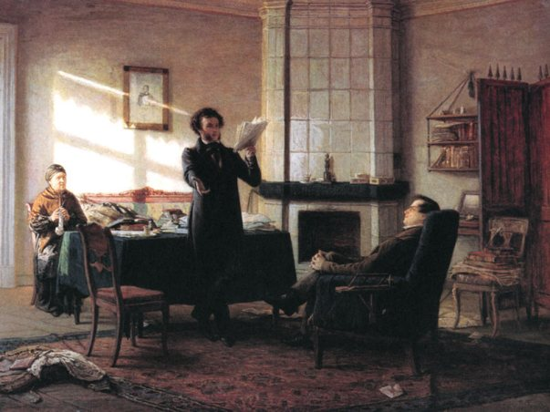
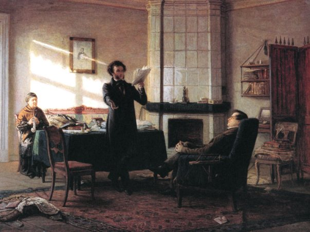

История Учредительного собрания
Сама идея Учредительного собрания, хотя и под другим названием, среди русской общественности отслеживается ещё со времён Декабристов. Они планировали провести минимальную программу реформ, объявив её своим манифестом, а после «созвать на Великий собор народных представителей из всех сословий народа, которые должны будут решить судьбу государства» (К. Ф. Рылеев) и таким образом «назначить тот образ правления, который общим мнением признаётся полезнейшим и для всех благодетельным» (И. И. Пущин).[1] Некоторые и вовсе считают, что идея подобного органа проистекает из Земских соборов XVI–XVII веков.[2]
Уже сильно позже Декабрьского восстания, в 1862 году, революционером-народником Петром Заичневским был создан политический манифест-прокламация «Молодая Россия», в котором, было требование: «изменения современного деспотического правления в республиканско-федеративный союз областей, причём вся власть должна перейти в руки Национального и Областных Собраний», а также автор считал, что: «революционная партия, которая станет во главе Правительства, должна захватить диктатуру в свои руки и не останавливаться ни перед чем. Выборы в Национальное Собрание должны происходить под влиянием Правительства, которое тотчас же и позаботится, чтобы в состав его не вошли сторонники современного порядка (если они только останутся живы)». То есть власть в стране после переворота должна была бы перейти в руки «революционной партии», которая бы, в свою очередь, передала её «Национальному Собранию», на выборы в которое не допустили бы сторонников старого строя.[3] В 1879 году Исполнительный Комитет «Народной воли», народнической революционной террористической организации, наиболее знаменитой организацией убийства Александра II, издал свою программу, где было написано, что «народная воля была бы достаточно хорошо высказана и проведена Учредительным Собранием, избранным свободно, всеобщей подачей голосов, при инструкциях от избирателей», а целью организации было: «отнять власть у существующего правительства и передать ее Учредительному Собранию, которое должно пересмотреть все наши государственные и общественные учреждения и перестроить их согласно инструкциям своих избирателей».[4]
В тот же год, что и народовольцы – свою программу, Иван Петрункевич, член конституционно-демократической партии, написал брошюру «Ближайшие задачи земства» и утверждал в ней, что «земство должно написать на своем знамени три положения: свобода слова и печати, гарантия личности и созыв Учредительного Собрания».[5]
Постепенно в сознании интеллигенции Учредительное собрание превращалось в абстрактный символ свободы, правого государства, народовластия. Стало понятно, что и кто, наконец, решит все проблемы государства: земельный вопрос, отсутствие политических свобод и демократии, национальные вопросы – представители самого народа, избранные на свободных выборах. Однако каждая политическая сила или группировка считали, что их вариант развития страны непременно самый верный, и народ представлялся лишь объектом их политики.[6]
Источники
М.В. Нечкина. День 14 декабря 1825 года – 398 с. – М: Издательство «Мысль», 1975. – с. 41–43.
Гаврилов Ю. Воля народа? Почему не состоялось Учредительное собрание // Огонёк. 1990. № 11. С. 21.
Заичневский П. Г. Прокламация «Молодая Россия» // Революционный радикализм в России: век девятнадцатый. Документальная публикация / Ред. Е. Л. Рудницкая. — М.: Археографический центр, 1997.
Сборник программ и программных статей партии "Народной воли" .- Женева : Г.А. Куклин , 1903 .- 52 с., с. 5.
Петрункевич И. Ближайшие задачи земства, - 1879.
Л.Г. Протасов. Всероссийское Учредительное Собрание: история рождения и гибели – 368 с. – М: «Российская политическая энциклопедия» (РОССПЭН), 1997. – с. 14-16.
 
